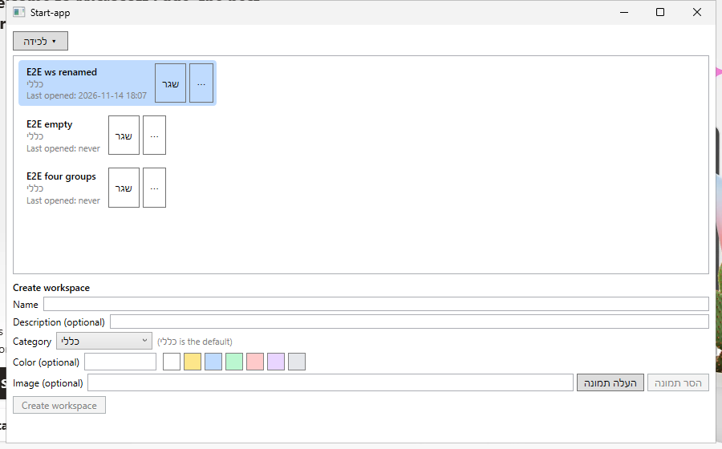
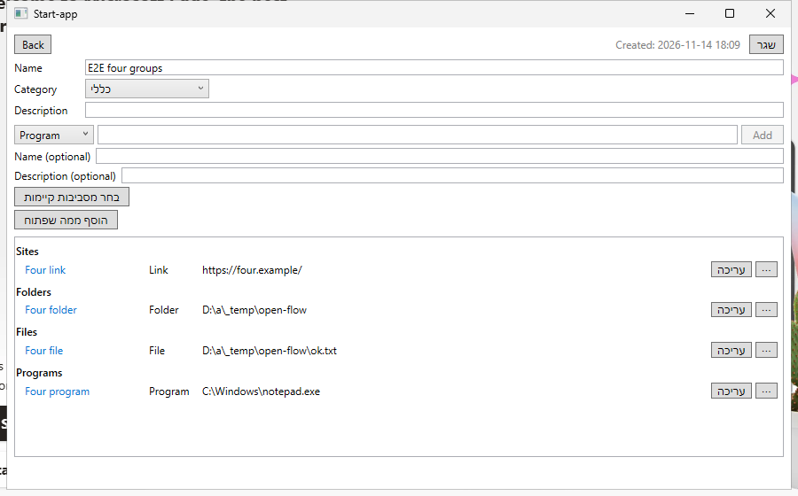
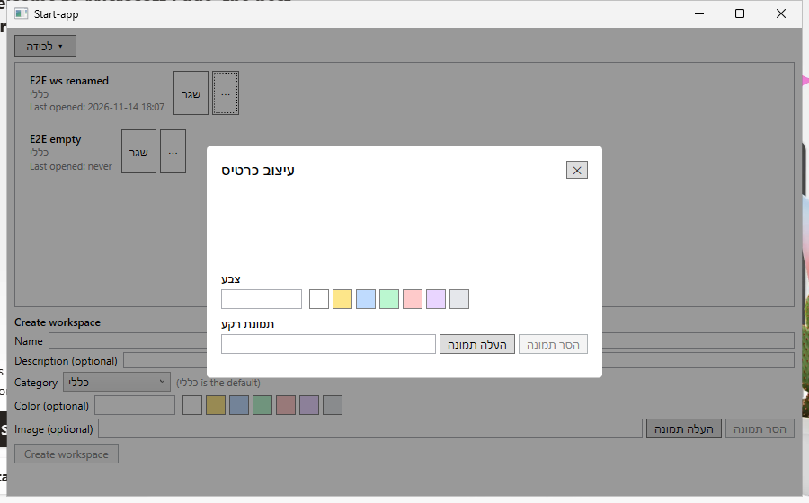
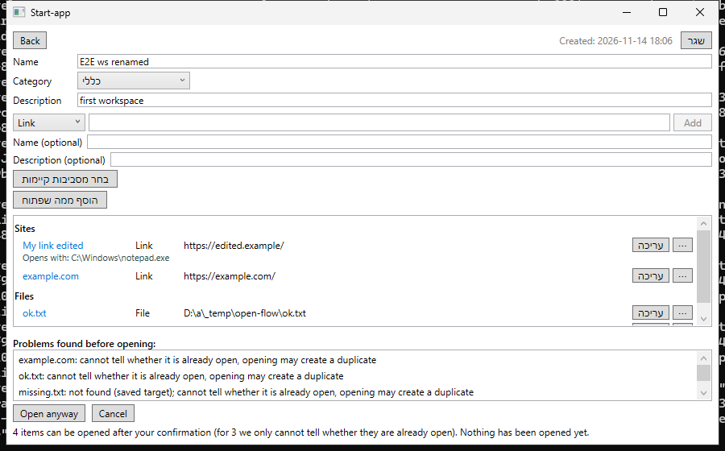

ユーザーガイド
ガイド Start-app
ステップバイステップ: ワークスペースの作成、項目の追加、キャプチャ、起動、保存 - アプリケーションの実際のスクリーンショットと、知っておくべき重要な制限事項を示します。
評価用プロトタイプであり、安定版ではありません
ガイドのバージョン: 0.1.0-proto.1
エピソードは見つかりませんでした。別の単語を試すか、検索をクリアしてください。
それは何ですか Start-app
Start-app プログラム、フォルダー、ファイル、リンクを 1 つの環境名で保存します。次回コンピュータを開くとき、「ファイル名を指定して実行」コマンドを実行すると、各項目を再度選択することなく、すべての項目がまとめて開きます。
このガイドには、メイン画面、環境の作成、手動またはキャプチャ、編集、起動、保存によるアイテムの追加というルート全体が含まれています。章 既知の制限事項 アプリケーションが実行しないすべてのことを 1 か所に集中化します。
システムとインストールの要件
パッケージ化対象は Windows x64 です。検証済みの Mac または Linux バージョンはありません。
ダウンロードの可用性が表示されます ホームページで そして自動的に更新されます。検証済みのプロトタイプ バージョンがある場合は、インストール前に確認できるバージョン番号、ファイル サイズ、sha256 とともにダウンロード リンクが表示されます。
このガイドが説明するバージョン 0.1.0-proto.1 のダウンロードは、ホームページのバージョン一覧にあります。ダウンロードはそこでのみ行い、ガイドページからは行いません。
ダウンロード後のアクティベーション
ダウンロードはインストーラーではなく ZIP ファイルです。ダウンロード後:
- ZIP からすべてのファイルをフォルダーに抽出します。
- 解凍したフォルダーを開き、実行します
StartApp.App.exe. - DLL とランタイム ファイルは、ファイルの隣のフォルダーに残しておきます。
ZIP 内のすべてのファイルをフォルダーに展開してください。パッケージ構成は不明です。実行ファイルを選ぶ前に、その版の説明を確認してください。
ZIP 内のすべてのファイルを展開します。ルートフォルダーの Start-app.exe を実行し、App フォルダーを隣に保ち、移動時はフォルダー全体を移動してください。
現在のプロジェクト設計は、ランタイムを含み、登録やサインインが不要で、データをデバイスにローカル保存するパッケージです。ダウンロード提供される各パッケージの特性は、承認時に公開・検証されます。
アプリケーションにはランタイム環境が含まれているため、.NET を個別にインストールする必要はありません。登録、アカウント、ログインは必要ありません。データはローカル ファイルに保存されます。%LOCALAPPDATA%\StartApp\store.json.
テスト内容: このプロトタイプはスタンドアロン Windows x64 アプリケーションとして構築され、ホストされた Windows Server 2025 サーバー上で正常に起動およびシャットダウンされました。家庭用 Windows 11 では独自にテストされておらず、Windows の最小バージョンの保証もありません。セキュリティ警告やウイルス対策ソフトウェアの警告が表示されないという保証はありません。
メイン画面: 環境ビュー
画面上部には環境の一覧があります。各環境カードには、名前、説明、カテゴリ、選択したカードの色と画像、作成日時、最終オープン日時が表示されます。最終オープン日時は、個別のアイテムを開いたときではなく、環境を起動したときに更新されます。
各カードには「起動」ボタンと、その他の操作を含む「...」メニューがあります。一覧の下には新しい環境を作成するフォームがあり、画面の隅からキャプチャ画面に移動できます。

新しい作業環境の構築
作成フォームでは名前は必須です。デフォルトのカテゴリは「一般」で、カードの色と画像を選択できます。説明は任意です。保存すると、詳細が保存されたことを示す確認メッセージが表示されます。

項目がまだ存在しない環境を起動しようとすると、項目を追加するための環境の詳細を指示するメッセージが表示されます。

項目を手動で追加する
環境詳細画面では、サイト、ファイル、フォルダー、ソフトウェアの4種類の項目を追加します。各項目には独自の名前と説明を付けることができます。ローカル パスには、短いソフトウェア エイリアスではなく、完全な Windows パスが必要です。

項目は、Web サイト、フォルダー、ファイル、ソフトウェアなどの種類ごとに画面上でグループ化されます。各行には編集ボタンとアクション メニューがあります。

キャプチャ: スキャン、選択、複製
キャプチャでは、プログラム、Windows ファイル エクスプローラー、ブラウザーのアドレス バーなど、現在開いているものをスキャンします。ブラウザのソースは Chrome、Edge、Brave を認識します。現在、各ブラウザとバージョンの完全な互換性マトリックスはありません。スキャンには最大 10 秒かかる場合があります。
結果は保存する前に選択用に表示されます。これらから新しい環境を作成したり、検索を使用して既存の環境に追加したりできます。

新しい環境を作成する場合、これらの項目はデフォルトでチェックされます。既存の環境に追加する場合: マークなしのアクションは「すべて追加」、マークありの場合は「選択を追加」です。環境内に既に保存されているものと重複する場合は、承認が必要です。並べて表示される画面の追加は、[保存] をクリックするまで一時的なものになります。

キャプチャされたサイトは、特定できる場合には、そのサイトが見つかったブラウザも保存します。

編集環境とアイテム
環境カードの「...」メニューでは、表示、起動、項目の追加、カードのフォーマット、カテゴリの編集が提供されます。

カードをデザインするときは、色と背景画像を選択します。各項目について、名前、説明、アドレスを編集したり、アドレスをコピーしたり、リスト内で移動したり、現在の環境から削除したりできます。 「使用して開く」は中の項目に保存されます Start-app Windows のデフォルトの関連付けのみを変更しません。

変更を保存せずに編集を終了すると、保存して終了するか、保存せずに終了するか、編集に戻るかの警告が表示されます。

環境を起動し、開く前にテストする
「run」コマンドは開く前に項目をチェックし、準備ができている項目、欠落している項目、サポートされていない項目、使用できない項目、または決定が必要な項目を分離します。決定が必要なアイテムは一般的なバイパスを受け取りません。リンクは http/https でのみ開き、ソフトウェアにはフルパスが必要です。

確認後、アプリケーションは Windows に各項目を開く要求を送信します。これが何を意味するかを理解することが重要です。送信されたリクエストは、目的のウィンドウが実際に開いたことを証明するものではありません。また、アプリは正確なアイテムがすでに開いているかどうかを確実に判断できないため、再度開くと重複が作成される可能性があります。ファイルが見つからない項目は、「ファイルが見つかりません」というメッセージが表示されて失敗します。
既知の制限事項
- ソフトウェア内で開かれたドキュメントを自動的に識別する機能はありません。開いているソフトウェアは、そのソフトウェアで特定のファイルが開かれたという証拠ではありません。ドキュメントは手動で追加されます。
- 保存されていないコンテンツやウィンドウの配置が回復される保証はありません。
- 「すでにオープンしている」かどうかは確実にはわかりません。再開すると重複が作成される可能性があります。
- キャプチャでは、タブ間を公然と切り替えてアドレスを読み取ることができます。
- 部分的なキャプチャ結果または空のリストは、開いているものが何もないことを意味するわけではありません。
- インターフェイスには環境の削除操作はありません。環境全体を削除することはできませんが、環境から項目を削除することはできます。
- 「別の環境と共有」が表示される場合がありますが、無効になっています。
保存とローカルストレージ
現在のプロジェクト設計では、ワークスペースは、コンピューター上のローカル ファイルに保存されます。 %LOCALAPPDATA%\StartApp\store.json。変更は、明示的に「保存」をクリックした場合にのみ保存されます。
プライバシーを一言で言うと
現在の設計では、環境のデータはコンピューター上にローカルに保存されます。リンクまたはソフトウェアを開くと、その宛先での通常のコミュニケーションが作成されます。たとえば、ブラウザで Web サイトを開くと、その Web サイトにアクセスします。
このサイト自体には、フォーム、分析、リモート フォント、またはサードパーティのサービスは含まれません。
よくある質問
何 Start-app やってる？
プログラム、フォルダー、ファイル、リンクを 1 つの環境名で保存し、「実行」コマンドでまとめて開きます。
開いているものはすべて元の状態に戻りますか?
保証されていません。プログラム内で開かれているドキュメントの自動キャプチャ、保存されていないコンテンツの回復、またはウィンドウの配置の約束はありません。オープニングはオペレーティング システムへのリクエストであり、事前チェックとレポートが行われます。
ソフトウェアで開いているドキュメントを追加するにはどうすればよいですか?
手動: ファイル自体を環境の詳細のファイル タイプ項目として追加します。オープンソフトウェアからはキャプチャ自体が認識しません。
情報はどこに保存されますか?
コンピューター上のローカル ファイルにあります。詳細は章で 保存とローカルストレージ.